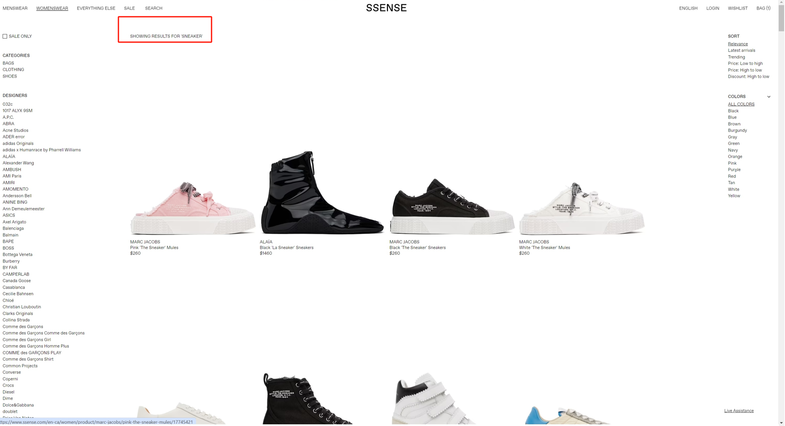
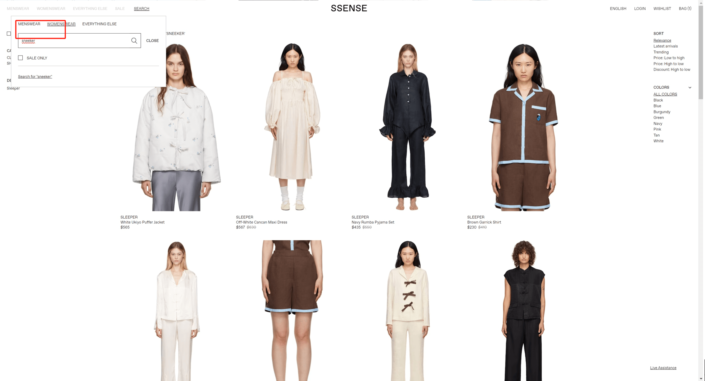
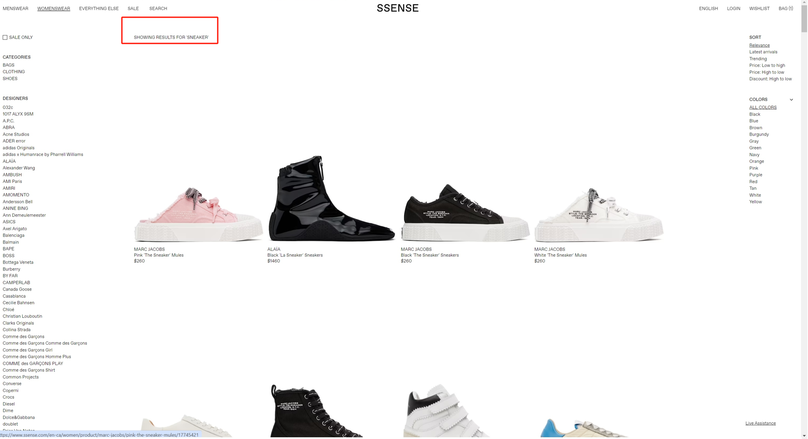
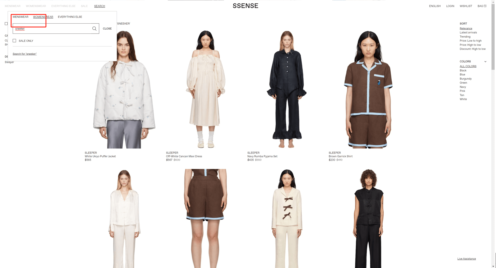
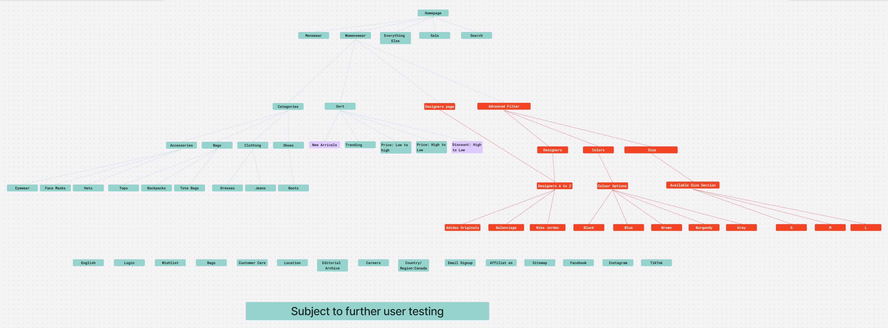

final prototype
Context
SSENSE is a Montreal-based luxury e-commerce platform known for its minimalist aesthetic, curated designer selection, and editorial-driven shopping experience. SSENSE’s platform targets fashion-forward users aged 18–40 who expect a seamless, efficient shopping experience for high-end and emerging designer brands. The site’s IA demonstrates a top-down and bottom-up approaches to organization systems: at the top level, users choose among broad categories like Women’s, Men’s, Kidswear, and Editorial in the global navigation, while each category page relies on a bottom-up faceted navigation panel driven by product metadata like designer, price, size, and color to filter thousands of items. The labeling system of SSENSE is concise, usually kept to a maximum of three words with no abbreviations to avoid jargon.
Through interviews, observation-based user testing, and a review of the platform's UI components, we identified how SSENSE’s current system shapes user behaviour. New and returning shoppers alike expressed appreciation for the clean aesthetic and high-quality imagery, yet struggled with the overwhelming faceted filter panel, inconsistent visibility of key filters, and limited search functionality. These insights, combined with our analysis of SSENSE’s organizational structure, content types, and browsing pathways, established a clear foundation for understanding the design environment we were working within. Our final deliverables for this stage included a report analyzing the intended user and the current IA, a second report documenting user-testing insights with the proposed IA, and a medium-fidelity prototype illustrating our redesigned navigation.
project goal
The goal of our project is to improve the user experience on SSENSE’s Womenswear section by refining its IA and HCI design while keeping the site’s unique, minimalist branding identity. Specifically, we want to simplify the faceted filter panel, establish a clearer visual hierarchy for better readability, and improve the search functionality.
design problem
Through a combination of online research, think-aloud user testing, and UI/IA analysis, our team identified the key usability issues that currently hinder the Womenswear browsing experience:
- The faceted filter panel presents too many options at once, overwhelming users with a dense, unprioritized list of designers, categories, colours, and metadata.
- Key filters such as Designer and Category lack visual hierarchy and are easy to overlook, especially for new or casual users.
- The search engine only supports exact keyword matching, offering no typo correction, auto-suggest, or synonym handling, which leads to dead-end searches.
- Minimal spacing, lightweight typography, and inconsistent hierarchy reduce readability, slow down scanning, and increase cognitive load across the Womenswear page.
- New users struggle to navigate the filter panel and identify important controls, while experienced users report inefficiency and frustration with the current filter and search systems.

All the advanced filters are presented to the user at once, making the searching experience visually overwhelmed.
 



Search results for the keywords “sneakers,” “sneaker,” and “sneeker” return completely different sets of products, demonstrating the website’s lack of typo tolerance and synonym handling.
redesign ideation
We began our redesign ideation by grounding our decisions in user research and card-sorting insights. Through an open card-sorting study with five participants, we discovered strong, consistent mental models around product type, simplified filter groupings, and familiar terminology. Participants naturally organized items under categories like Clothing, Shoes, Bags, and Accessories, and labelled filters collectively as “Sort By” or “Filter,” indicating a preference for clearer, consolidated structures. They also gravitated toward simpler language such as “New Arrivals” instead of “Latest Arrivals,” and grouped colour tags into a single, intuitive “Colour Options” category. These insights directly informed the conceptual direction of our redesign.
With the given result, our ideation phase focused on restructuring the Womenswear IA to minimize cognitive load while enhancing clarity and discoverability. Early sketches and IA schematics reflect these goals: a more simplified navigation hierarchy, clearer naming conventions, and reorganized filter logic designed around real user mental models.
Our proposed IA introduces a consolidated Advanced Filter section, organizing Designers, Colours, Sizes, and additional filtering options under a single, easy-to-locate module. High-priority navigational elements—such as Category and Designer—were elevated to more prominent positions, while less frequently used filters were nested to reduce visual clutter. We also refined naming conventions for consistency and readability, replacing ambiguous or lengthy labels with user-preferred terminology. This new IA significantly improves findability, reduces decision fatigue, and lays the foundation for our medium-fidelity prototype, where we further refined layout, hierarchy, and interaction flow to support a more intuitive shopping experience.
Proposed New IA Diagram
To translate the revised IA into a usable interface, we developed a series of low-fidelity sketches that maps out the layout, hierarchy, and interaction patterns reflective of our structural redesign. The sketches focus on clarifying key user flows—particularly filtering, designer navigation, and search refinement. By visually separating high-value filters from secondary options, the layout creates a cleaner interface that supports quicker scanning and easier decision-making.
We decided to create a collapsed window for advanced filter like colours, sizes, and designers. This additional window helps to make the homepage less visually overwhelming.
A separated Designers Page is added for more efficient search.
Redesigned search results interface showing explicit query feedback, improved filter visibility, and direct navigation to the selected designer’s page.
user testing outcome & Final Prototype
Our user testing, conducted through two parallel tree tests, revealed clear differences in how participants navigated the original versus the redesigned IA of the SSENSE Womenswear section. Both structures achieved a 98% success rate, but the redesigned IA received higher user preference, with participants describing it as more intuitive and logically organized. However, the revised IA produced a lower directness score (59% vs. the original’s 73%), indicating that users needed to backtrack more often to reach final answers. Task performance further highlighted strengths and weaknesses: the improved placement of “Eyewear” under “Accessories” increased direct success from 73% to 82%, while burying “Designers” under “Advanced Filter” significantly reduced direct success for brand-based tasks (e.g., Balenciaga tote bag) from 73% to 27%. These findings revealed that while the redesigned IA established consistency and clearer structure, essential brand filters needed to be more visible.

The left shows the card sorting results of the proposed new IA of SSENSE; the right shows the card sorting results of the original IA.
Our final product introduces a medium-fidelity Figma prototype that aligns with user mental models, featuring clearer category organization, improved labeling, and a modular “Advanced Filter” system for Designers, Colours, Sizes, and Sort options. We also added missing elements such as a dedicated Size filter and refined terminology (e.g., “New Arrivals,” “Colour Options”) for consistency and clarity.
Future Development
Through this project, I gained a deeper understanding of information architecture and how structural decisions shape the way users navigate and make sense of a digital environment. I learned how concepts such as hierarchy, labeling, organization schemes, and user mental models directly influence clarity and findability—often more than the visual interface itself. Moreover, user testing played an equally important role in shaping our design process. These insights helped and refined our design solutions, demonstrating that design processes are iterative, evidence-based, and continuously validated.
In my future projects I want to improve on several points:
1. Explore alternative filter layouts—such as progressive disclosure or sticky filter bars—to balance minimalism with usability.
2. Test responsive and mobile-specific patterns, as filter visibility and hierarchy often differ significantly on smaller screens.
3. Incorporate user testing earlier and more frequently to catch navigation issues before moving to sketches or prototypes.
4. Develop a more detailed and finalized prototype as a final product.